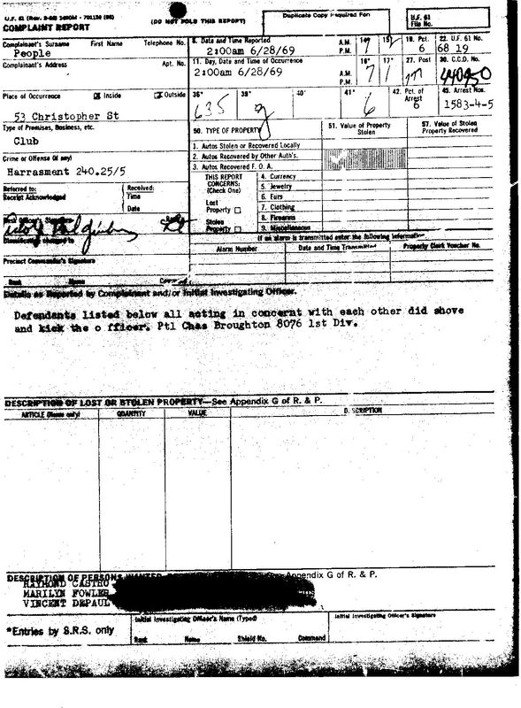

To honor the 40th anniversary celebration of the Stonewall Riots in June 2009, OutHistory for the first time published nine pages of New York City Police Department records created early on the morning of the rebellion’s starting date, June 28, 1969. These were obtained by Jonathan Ned Katz via a New York Freedom of Information Law request.
Transcript:
Complaint Report
Complainant's Surname People
Date and Time Reported 2:am 6/28/69
Pct 6
U.F. 61 No. 6819
Place of Occurrence inside [checked] Outside [checked]
C.C.D. No. 440950
Place of Occurrence 53 Christopher St
Precinct of Arrest 6
Arrest Nos. 1583-4-5
Type of Premises, Business, etc. Club
Crime or Offense (if any) Harassment 240/25/5
Desk Officer's Signature: [unclear words] Lt [Lieutenant]
Details as Reported by Complainant and/or Initiating Investigator Defendants listed below all acting in concernt [sic] did shove and kick the officer. Ptl [Patrolman] Chas Broughton 8076 1st Div.
Description of Persons Wanted [following words blacked out]
RAYMOND CASTRO [address after name blacked out]
MARILYN FOWLER [address after name blacked out]
VINCENT DEPAUL [address after name blacked out]
Officer Charles Broughton of the 1st Division arrested Raymond Castro, Marilyn Fowler and Vincent DePaul, charging that they “with each other did shove and kick the officer.” This is the first time that Fowler and DePaul have been named and documented as rebellion participants. Fowler’s name is extremely significant, since no other woman’s arrest has so far been documented, and numbers of witnesses attributed the intensification of the riot to the arrest and resistance of an unnamed butch woman.